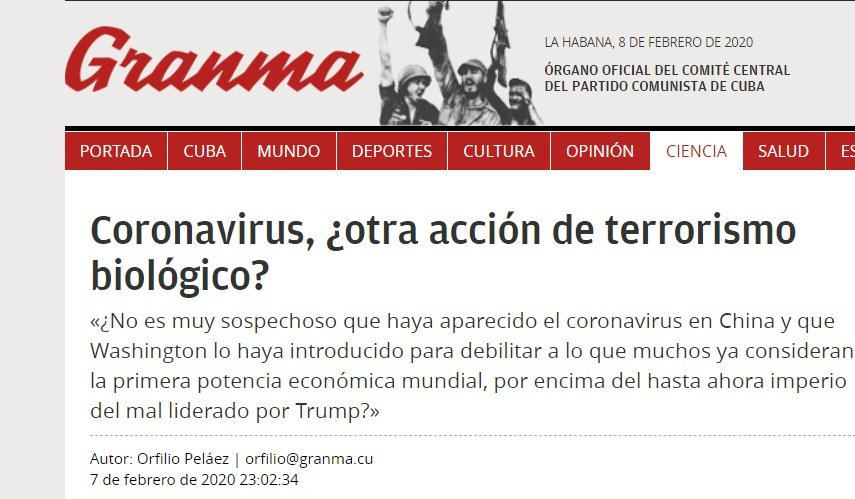
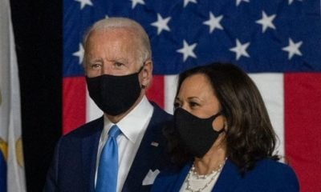

Medios oficialistas culpan a EEUU del coronavirus
El régimen de Cuba, a través de sus medios oficiales, ha acusado a Estados Unidos de haber creado el nuevo coronavirus que ha matado a más de 700 personas en China e infectado a miles más.
El periódico oficialista Granma replicó la supuesta teoría del artículo 'Coronavirus, ¿Otra acción de terrorismo biológico?', escrito por el comunista español Patricio Montesinos.

El periodista considera que 'el coronavirus pueda ser un germen creado en laboratorios de EEUU, como arma bacteriológica de la guerra comercial desatada por Washington contra China'.
Su texto indica también que existe una 'intensa campaña mediática internacional antichina', que a juicio del escritor 'alimenta la hipótesis de que la administración del presidente Donald Trump pudiera ser la responsable de la epidemia aparecida a finales de diciembre de 2019, en la ciudad de Wuhan'.
Montesinos también hace alusión a una declaración hecha a finales de enero por el Secretario de Comercio Wilbur Ross, quien indicaba que el coronavirus aceleraría el regreso de trabajos a EEUU.
Secretary Wilbur Ross says coronavirus will be good for [checks notes] American jobs: 'I think it will help to accelerate the return of jobs to North America.'pic.twitter.com/Y4SbDIcTi4 — Aaron Rupar (@atrupar) January 30, 2020
El artículo ignora el hecho de que científicos de varios países además de China han desarrollado teorías sobre el verdadero posible origen del coronavirus.
No obstante, el régimen cubano aprovecha cualquier oportunidad para atacar al gobierno estadounidense, por las dificultades que le ocasiona en su manejo de la Isla.
Posted On: 2020-02-08T00:00:00
Posted By: Periódico Cubano


Content Date: 2020-02-08
Download Date: 2021-05-13
Document ID: L0C04C73R